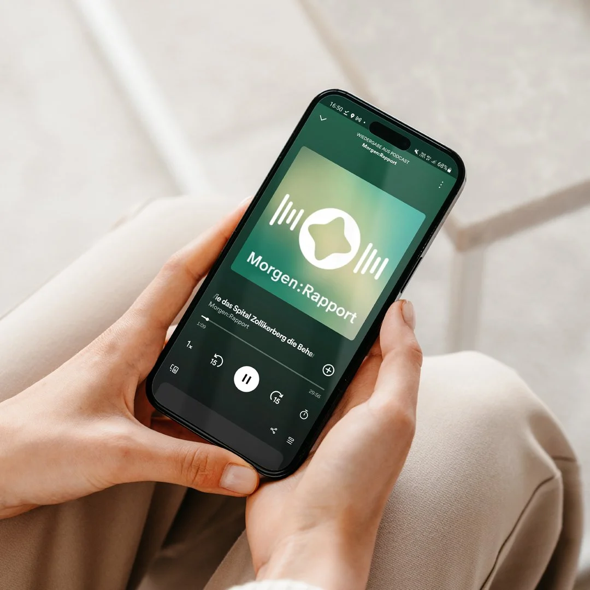
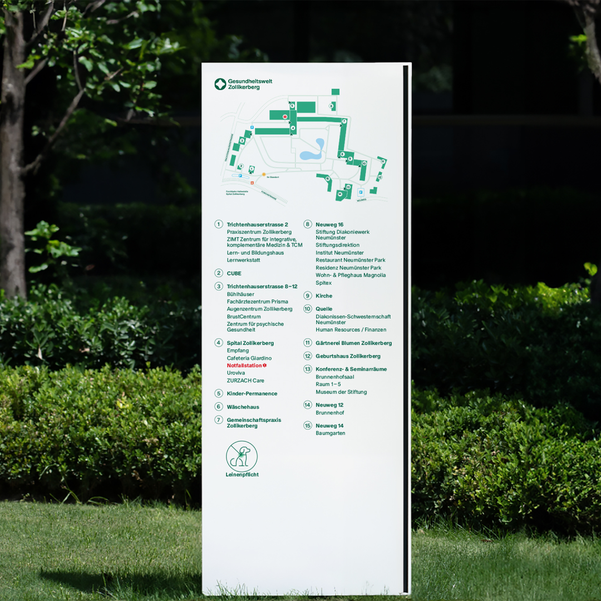

Gesundheitswelt
Zollikerberg
Den Menschen in seiner Ganzheitlichkeit betrachten und helfen — das ist der Kern der Stiftung Diakoniewerk Neumünster. Die Organisation setzte eine gruppenweite Kommunikationsstrategie mit neuer Markenidentität und Masterbrand-Positionierung um, um Stakeholder-Beziehungen zu stärken und die organisationale Zukunft zu gestalten.


